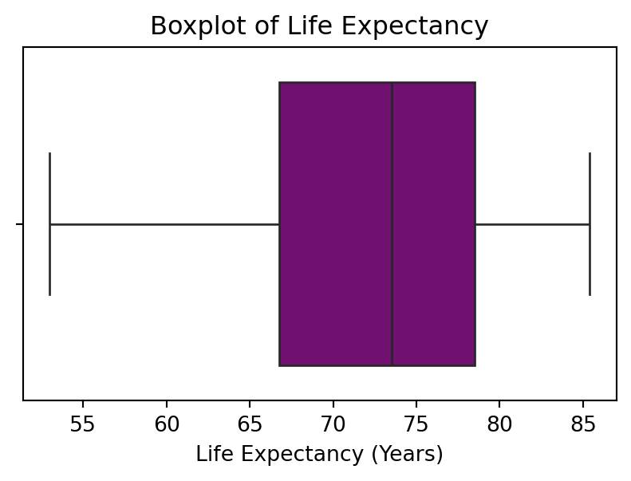

| country | inflation_rate | exports_gdp_share | gdp_growth_rate | gdp_per_capita | adult_literacy_rate | primary_school_enrolment_rate | education_expenditure_gdp_share | measles_immunisation_rate | health_expenditure_gdp_share | income_inequality | unemployment_rate | life_expectancy | total_population | |
|---|---|---|---|---|---|---|---|---|---|---|---|---|---|---|
| 0 | Afghanistan | NaN | 18.380042 | -6.240172 | 357.261153 | NaN | NaN | NaN | 56.0 | NaN | NaN | 14.100 | 62.879 | 40578842.0 |
| 1 | Albania | 6.725203 | 37.197085 | 4.826688 | 6846.426143 | 98.5 | 96.371231 | 2.744330 | 86.0 | NaN | NaN | 10.137 | 76.833 | 2777689.0 |
| 2 | Algeria | 9.265516 | 30.808979 | 3.600000 | 4961.552577 | NaN | 108.343933 | 4.749247 | 79.0 | NaN | NaN | 12.346 | 77.129 | 45477389.0 |
| 3 | American Samoa | NaN | 46.957520 | 1.735016 | 18017.458938 | NaN | NaN | NaN | NaN | NaN | NaN | NaN | NaN | 48342.0 |
| 4 | Andorra | NaN | NaN | 9.564612 | 42414.059009 | NaN | 90.147346 | 2.647290 | 98.0 | NaN | NaN | NaN | NaN | 79705.0 |
EDA Analyis Report
Nicole Chen
2025-02-24
Introduction
This report aims to present an exploratory data analysis of the World Bank data for the “World” region in 2022(Bank 2022). We will focus on three key indicators - “Life Expectancy, Exports as a Share of GDP, and Education Expenditure as a Share of GDP” - and include visualizations and statistical summaries.
Data Loading
Exploratory Data Analysis for Three Factors
Data Overview
Table (ref?)(tab:summary-table) provides a summary of key economic indicators used in this analysis.
<class 'pandas.core.frame.DataFrame'>
RangeIndex: 217 entries, 0 to 216
Data columns (total 14 columns):
# Column Non-Null Count Dtype
--- ------ -------------- -----
0 country 217 non-null object
1 inflation_rate 173 non-null float64
2 exports_gdp_share 179 non-null float64
3 gdp_growth_rate 206 non-null float64
4 gdp_per_capita 207 non-null float64
5 adult_literacy_rate 54 non-null float64
6 primary_school_enrolment_rate 156 non-null float64
7 education_expenditure_gdp_share 137 non-null float64
8 measles_immunisation_rate 193 non-null float64
9 health_expenditure_gdp_share 20 non-null float64
10 income_inequality 28 non-null float64
11 unemployment_rate 186 non-null float64
12 life_expectancy 209 non-null float64
13 total_population 217 non-null float64
dtypes: float64(13), object(1)
memory usage: 23.9+ KB| inflation_rate | exports_gdp_share | gdp_growth_rate | gdp_per_capita | adult_literacy_rate | primary_school_enrolment_rate | education_expenditure_gdp_share | measles_immunisation_rate | health_expenditure_gdp_share | income_inequality | unemployment_rate | life_expectancy | total_population | |
|---|---|---|---|---|---|---|---|---|---|---|---|---|---|
| count | 173.000000 | 179.000000 | 206.000000 | 207.000000 | 54.000000 | 156.000000 | 137.000000 | 193.000000 | 20.000000 | 28.000000 | 186.000000 | 209.000000 | 2.170000e+02 |
| mean | 12.404067 | 47.630189 | 4.393817 | 20520.336828 | 80.971722 | 100.629850 | 4.164884 | 84.103627 | 9.044045 | 38.328571 | 7.227344 | 72.416519 | 3.671334e+07 |
| std | 19.467053 | 35.631646 | 6.706923 | 30640.741594 | 18.430839 | 12.035956 | 1.771027 | 15.413050 | 2.703549 | 7.721488 | 5.844462 | 7.713322 | 1.415211e+08 |
| min | -6.687321 | 1.571162 | -28.758584 | 250.634225 | 27.280001 | 67.231788 | 0.348517 | 33.000000 | 5.100000 | 26.400000 | 0.130000 | 52.997000 | 9.992000e+03 |
| 25% | 5.518129 | 24.363501 | 2.545226 | 2599.752468 | 74.760000 | 94.696211 | 2.951592 | 76.000000 | 7.263266 | 32.900000 | 3.478000 | 66.782000 | 8.216370e+05 |
| 50% | 7.930929 | 40.817640 | 4.213483 | 7606.237525 | 85.452465 | 99.840630 | 3.938396 | 90.000000 | 8.925000 | 38.100000 | 5.334000 | 73.514634 | 6.664449e+06 |
| 75% | 11.665567 | 59.741910 | 6.200000 | 27542.145523 | 95.875000 | 104.298615 | 4.959176 | 96.000000 | 10.632500 | 43.125000 | 9.261750 | 78.475000 | 2.601440e+07 |
| max | 171.205491 | 211.278206 | 63.334587 | 226052.001905 | 100.000000 | 156.801918 | 10.703345 | 99.000000 | 16.571152 | 54.800000 | 35.359000 | 85.377000 | 1.425423e+09 |
Checking for Missing Values
country 0
inflation_rate 44
exports_gdp_share 38
gdp_growth_rate 11
gdp_per_capita 10
adult_literacy_rate 163
primary_school_enrolment_rate 61
education_expenditure_gdp_share 80
measles_immunisation_rate 24
health_expenditure_gdp_share 197
income_inequality 189
unemployment_rate 31
life_expectancy 8
total_population 0
dtype: int64Factor 1: Life Expectancy
count 209.000000
mean 72.416519
std 7.713322
min 52.997000
25% 66.782000
50% 73.514634
75% 78.475000
max 85.377000
Name: life_expectancy, dtype: float64Factor 2: Exports as a Share of GDP
count 179.000000
mean 47.630189
std 35.631646
min 1.571162
25% 24.363501
50% 40.817640
75% 59.741910
max 211.278206
Name: exports_gdp_share, dtype: float64Factor 3: Education Expenditure as a Share of GDP
count 137.000000
mean 4.164884
std 1.771027
min 0.348517
25% 2.951592
50% 3.938396
75% 4.959176
max 10.703345
Name: education_expenditure_gdp_share, dtype: float64Visualizations
Distribution of Life Expectancy

: Distribution of Life Expectancy {#fig:life-expectancy}
Findings 1:
As shown in (ref?)(fig:life-expectancy), most countries have a life expectancy between 60 and 80 years. There are outliers with low life expectancy, which could indicate conflicts or poor healthcare.
Boxplot of Life Expectancy

: Boxplot of Life Expectancy {#fig:life-expectancy2}
Findings 2:
As shown in (ref?)(fig:life-expectancy2), the boxplot confirms the presence of lower outliers in life expectancy. The median value is around 72 years, aligning with the statistical summary.
Scatter Plot of Exports vs. Education Expenditure
Figure (ref?)(fig:exports-vs-education) illustrates the relationship between Exports as a Share of GDP and Education Expenditure.

: Relationship between Exports as a Share of GDP and Education Expenditure {#fig:exports-vs-education}
Findings 3:
As shown in (ref?)(fig:exports-vs-education), Countries with higher exports do not necessarily allocate more to education. This suggests that economic priorities vary, with some nations investing heavily in education regardless of trade levels.
Scatter Plot of Exports vs. Life Expectancy

: Relationship between Exports as a Share of GDP and Life Expectancy {#fig:exports-vs-life-expectancy}
Findings 3:
As shown in (ref?)(fig:exports-vs-life-expectancy), exports as a share of GDP shows high variability, with some economies relying heavily on trade while others do not. Also, education expenditure varies widely, suggesting different government spending priorities.
Summary Table
Table (ref?)(tab:summary-table) provides a statistical summary of the three key indicators.
| life_expectancy | exports_gdp_share | education_expenditure_gdp_share | |
|---|---|---|---|
| count | 209.000000 | 179.000000 | 137.000000 |
| mean | 72.416519 | 47.630189 | 4.164884 |
| std | 7.713322 | 35.631646 | 1.771027 |
| min | 52.997000 | 1.571162 | 0.348517 |
| 25% | 66.782000 | 24.363501 | 2.951592 |
| 50% | 73.514634 | 40.817640 | 3.938396 |
| 75% | 78.475000 | 59.741910 | 4.959176 |
| max | 85.377000 | 211.278206 | 10.703345 |
: Summary statistics of selected World Bank indicators {#tab:summary-table}
Cross-Referenced Discussion
As shown in Table (ref?)(tab:summary-table), the mean life expectancy is approximately 72 years, with a significant variation among countries. Figure (ref?)(fig:exports-vs-education) suggests that there is no strong correlation between Exports as a Share of GDP and Education Expenditure, indicating different national priorities regarding trade and education funding.
Furthermore, Figure (ref?)(fig:life-expectancy) demonstrates that life expectancy varies widely among nations, with most countries clustering between 60 and 80 years. This aligns with global health disparities highlighted in prior research (Bank 2022; (UNDP) 2022).
References
Bank, World. 2022. “World Development Indicators 2022.” World Bank Publications. https://databank.worldbank.org/source/world-development-indicators.
(UNDP), United Nations Development Programme. 2022. “Human Development Report 2021/2022: Uncertain Times, Unsettled Lives.” United Nations Publications. https://hdr.undp.org/content/human-development-report-2021-22.